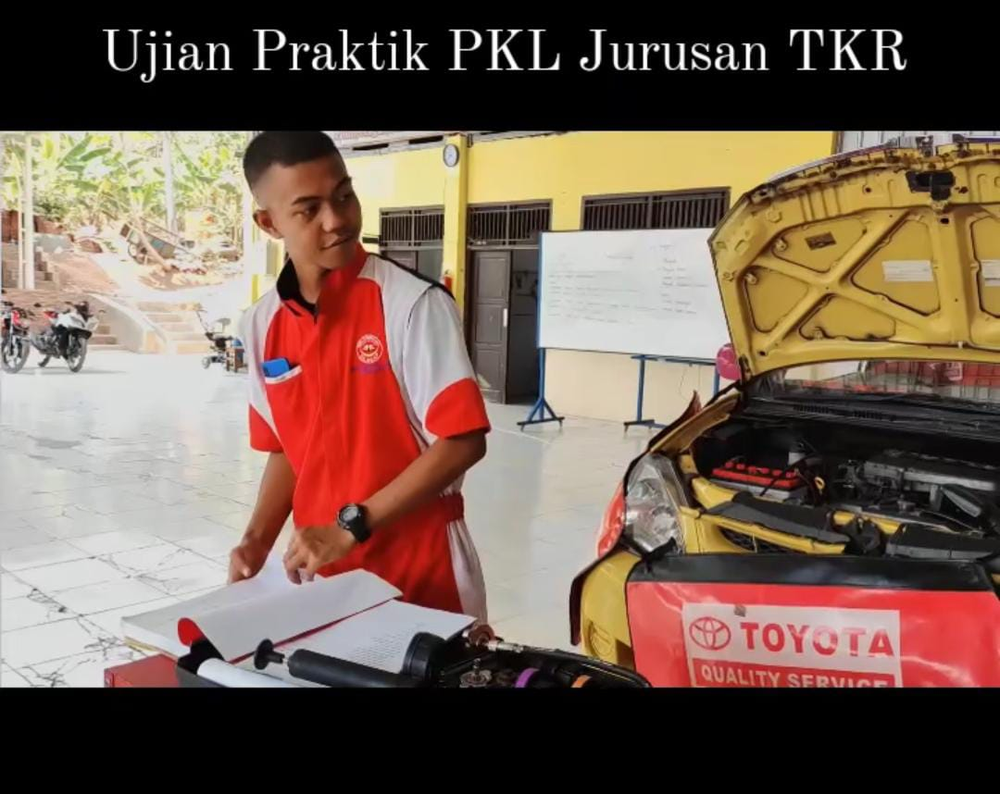
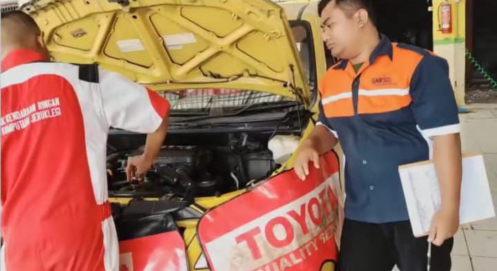
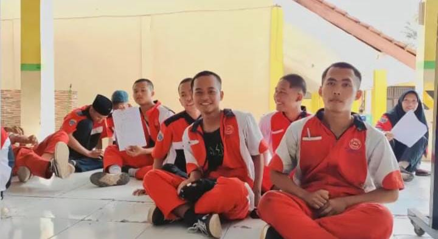

Teknik Kendaraan Ringan (TKR)
Program TKR berfokus pada pembelajaran otomotif modern, melatih siswa agar mampu melakukan perawatan, perbaikan, dan analisis sistem kendaraan bermotor. Siswa dibekali keterampilan praktik bengkel serta teori otomotif yang relevan dengan kebutuhan industri saat ini.
Kompetensi Lulusan
- Memahami sistem mekanik, kelistrikan, dan kontrol kendaraan.
- Mampu melakukan perawatan serta perbaikan kendaraan ringan secara profesional.
- Siap bekerja di bengkel resmi, industri otomotif, atau membuka usaha mandiri.
Fasilitas
- Bengkel otomotif lengkap dengan peralatan praktik modern.
- Ruang teori dengan alat peraga mesin dan sistem kendaraan.
- Kerjasama industri (DU/DI) dengan bengkel dan perusahaan otomotif ternama.
Kegiatan & Dokumentasi


